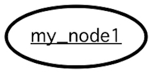
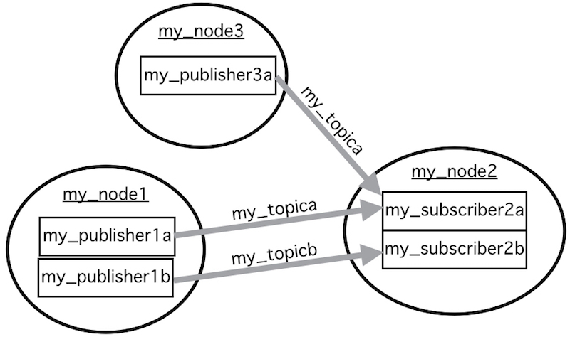
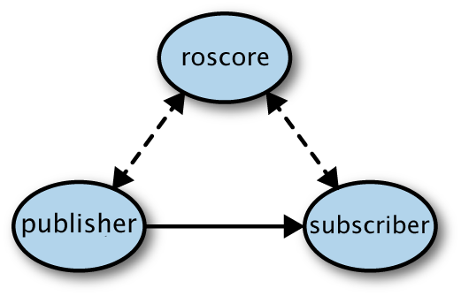

Robot Operating System (ROS) & rospy
Nodes
Where do we give the robot its behavior?

- A node is a program that runs on the robot.
- ROS can run multiple nodes at the same time.
For example, we give the racecars different nodes for their camera, LIDAR, and driving. - The nodes can pass standardized messages between each other.
For example, the driving nodes receive messages from the LIDAR and camera nodes. - Punchline: this allows us to split up the robot's code into logical chunks (instead of having one clonky program)!
- This is the bee's knees for debugging, since one node can fail without causing others to crash.
- If we switch out a piece of hardware (e.g. if we change the type of LIDAR sensor), we can just switch out the relevant chunks of software without scrounging through a huge program.
Topics & Messages
What carries data between nodes?
Messages
- A message is a packet of data.
- To import the message's datatype:
from my_source_file import my_msg_class
- To create a new message:
my_msg = my_msg_class()
This creates an instance of the my_msg_class class.
Topics
- A topic is a communication channel that carries messages between nodes.
For example, the LIDAR node sends itsLaserScanmessages to the/scantopic. - Each topic can only carry messages of one datatype.
- Multiple nodes can publish to and/or subscribe to one topic.
Here is our cheatsheet for topics and message types you will likely use.
Publishers & Subscribers
How exactly do nodes send/receive messages from topics?
Publishers
- A publisher is a part of a node that can send messages to a topic.
- To initialize a publisher
my_publisher = rospy.Publisher(my_topic, my_topics_datatype, queue_size=1)
where queue_size will be given to you (when in doubt, make it 1).
* To send a message
self.my_publisher.publish(my_msg)
Subscribers
- A subscriber is a part of a node that can receive messages from a topic.
- To initialize a subscriber:
my_subscriber = rospy.Subscriber(my_topic, my_topics_datatype, my_callback_func)
where my_callback_func is a callback function.
- The callback function's job is to process the received messages. Whenever the subscriber receives a message, it automatically calls the callback function and passes it the message.
- A callback function:
def my_callback_func (a_msg_from_my_topic):
print(a_msg_from_my_topic)
Summaries and Related Material

A mock example graph showing how a set of nodes might connect

A graph showing how an actual racecar’s nodes connect
Command line tricks: see details on our ROS Cheatsheet . Some notable commands include:
- To see the connection diagram of nodes and topics, try
rqt_graph. - To list all the currently running nodes, try
rosnode list. - To list all the topics, try
rostopic list.
The Details of Connecting and Running Nodes
NOTE: You will not need to know this program your cars (no really; the TA’s were not even aware of this when we first worked on the cars), but it is kinda cool.
Connecting Nodes
The topics connect the nodes… But who builds the topics?
-
Hiding under the hood is
roscore. -
First
roscoregoes through all the nodes and looks for publishers. If it finds a publisher, it records what node it’s in and what topic it publishes to. - Then
roscoregoes through all the nodes and looks for subscribers. When it finds a subscriber, it checks to see if the subscriber’s topic is in its list of publisher’s topics. If there are publishers that publish to that topic,roscorewill form a direct connection between the publisher(s) and the subscriber.

Taken with modification by Avalon Vinella from "Programming Robots with ROS" published by O'Reilly Media
- Since
roscoreforms direct connections between publishers and subscribers, it’s more like a telephone operator (which just connects lines/topics) than a post office (which intercepts all messages and sorts them back out). - When do we actually run
roscore? See the last section.
Running Nodes
- Thanks to the magic of rospy, all it takes to create a node is to run a python file containing
rospy.init_node("my_node")
Running Nodes in Packages
-
Sometimes it is inconvenient to run
roscoreall your nodes one by one. For convenience then, you can runroscoreand a whole bunch of nodes automatically withteleoporstartZED; these are simplifications we've made using the car's .bashrc file- (For reference, a bash file contains a set of terminal commands. The .bashrc file in particular automatically runs whenever you open a new terminal. In our case, the robot's main .bashrc file runs another bash file called .racecars ) In .racecars, we have written:
...
# Create aliases to avoid having to type out ros packages and launch files
alias teleop="roslaunch racecar teleop.launch"
alias startZED="roslaunch zed_wrapper zed.launch"
...
- This makes running
teleopequivalent to runningroslaunch racecar teleop.launchin the car's terminal. roslaunchis the actual command we are using. It can run nodes or other files in the package its given, and ifroscoreis not already running, it runsroscore.racecarandzed_wrapperare ROS packages, a collection of files that can include nodes, launch files, or any other relevant files.teleop.launchandzed.launchare the launch files which tellroslaunchhow to use the files in their respective packages.